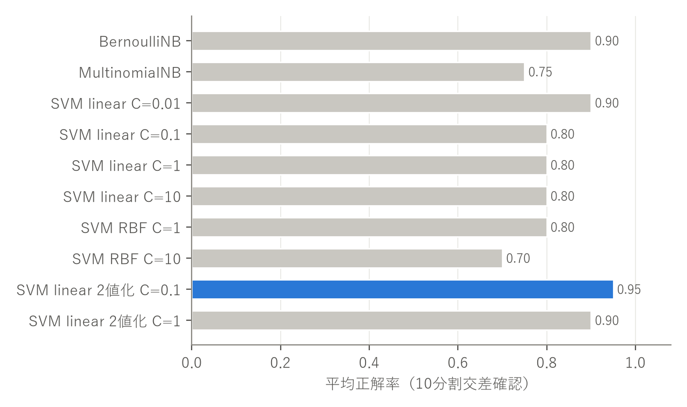
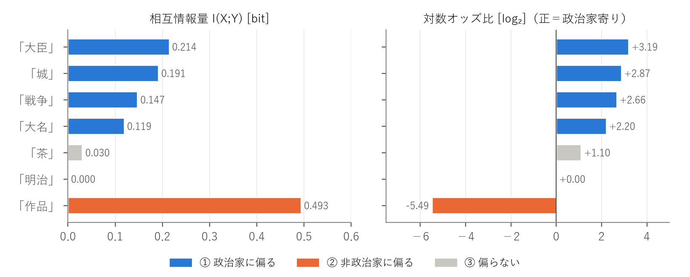

配布データ person_data.txt（20人分。政治家10人・非政治家10人）を Python で読み込み、7つの特徴（「城」「大名」「茶」「明治」「大臣」「戦争」「作品」の出現回数）からなる7次元の特徴ベクトルと正解ラベル（1：政治家，2：非政治家）のリストを作成した。分類には scikit-learn 1.9.1 を用いた。
評価は10分割交差確認で行った。scikit-learn の StratifiedKFold（シャッフルなし）で20人を10個のfoldに分け、各foldには政治家1人と非政治家1人の計2人がテストデータとして入るようにした。残りの18人で学習し、テストの2人を分類する処理を10回繰り返した（cross_val_predict を使用）。全foldの予測結果を正解ラベルと比べて混同行列を作り、10回分の正解率の平均を平均正解率とした。全ての方法で同じfold分割を使ったので、方法どうしを公平に比較できる。
「複数の方法」として、分類モデルとハイパーパラメータを変えた次の10通りを試した。
使用したプログラムの主要部分を以下に示す。
cv = StratifiedKFold(n_splits=10) # 各foldに政治家1人・非政治家1人
models = {"BernoulliNB": BernoulliNB(), "MultinomialNB": MultinomialNB(),
"SVM linear C=0.01": SVC(kernel="linear", C=0.01), ...,
"SVM linear 2値化 C=0.1": make_pipeline(Binarizer(), SVC(kernel="linear", C=0.1)), ...}
for key, model in models.items():
pred = cross_val_predict(model, X, y, cv=cv)
cm = confusion_matrix(y, pred, labels=[1, 2]).T # 行＝推測，列＝正解
acc = np.mean([accuracy_score(y[t], pred[t]) for t in folds])
各方法の平均正解率を図1に、混同行列を表1に示す。混同行列は講義スライドと同じく、行を分類器の推測、列を正解ラベルとした。

| 推測＼正解 | 政治家 | 非政治家 |
|---|---|---|
| 政治家 | 10 | 2 |
| 非政治家 | 0 | 8 |
| 推測＼正解 | 政治家 | 非政治家 |
|---|---|---|
| 政治家 | 8 | 3 |
| 非政治家 | 2 | 7 |
| 推測＼正解 | 政治家 | 非政治家 |
|---|---|---|
| 政治家 | 10 | 2 |
| 非政治家 | 0 | 8 |
| 推測＼正解 | 政治家 | 非政治家 |
|---|---|---|
| 政治家 | 8 | 2 |
| 非政治家 | 2 | 8 |
| 推測＼正解 | 政治家 | 非政治家 |
|---|---|---|
| 政治家 | 9 | 3 |
| 非政治家 | 1 | 7 |
| 推測＼正解 | 政治家 | 非政治家 |
|---|---|---|
| 政治家 | 9 | 3 |
| 非政治家 | 1 | 7 |
| 推測＼正解 | 政治家 | 非政治家 |
|---|---|---|
| 政治家 | 9 | 3 |
| 非政治家 | 1 | 7 |
| 推測＼正解 | 政治家 | 非政治家 |
|---|---|---|
| 政治家 | 7 | 3 |
| 非政治家 | 3 | 7 |
| 推測＼正解 | 政治家 | 非政治家 |
|---|---|---|
| 政治家 | 10 | 1 |
| 非政治家 | 0 | 9 |
| 推測＼正解 | 政治家 | 非政治家 |
|---|---|---|
| 政治家 | 10 | 2 |
| 非政治家 | 0 | 8 |
最も正解率が高かったのは 2値化した特徴の線形SVM（C=0.1）の 0.95 で、次いで BernoulliNB、線形SVM（C=0.01）、2値化線形SVM（C=1）の 0.90 だった。出現回数をそのまま使う方法（MultinomialNB、通常のSVM）は 0.70〜0.80 にとどまった。
出現の有無だけを使う方が精度が高かった。同じ線形SVMでも、出現回数をそのまま入力すると 0.80 だったのに対し、2値化すると 0.90〜0.95 に上がった。Naive Bayes でも、2値の BernoulliNB（0.90）の方が回数を使う MultinomialNB（0.75）より良かった。このデータでは出現回数のばらつきが大きく（上杉謙信の「城」25回、伊藤博文の「明治」15回など）、回数をそのまま使うと、ある人物の1つの特徴だけが大きな値になって判定を左右してしまう。人物を説明するWebページでは「その語が出てくるか」が職業をよく表し、「何回出てくるか」はページの長さや書き方に影響されやすいと考えられる。
ハイパーパラメータの影響。線形SVMでは C=0.1〜10 では正解率が 0.80 で変わらなかったが、C=0.01 まで小さくすると 0.90 に上がった。C が小さいと例外データへのペナルティが弱くなり、マージンを広く取る単純な境界になる。学習データが18人しかないので、個々のデータに合わせすぎない方が未知データに強くなったと考えられる。RBFカーネルでは C=10 が最低の 0.70 だった。RBFは非線形の複雑な境界を作れるが、データが少ないとかえって過学習しやすく、今回の問題には向いていなかった。
誤りの向きの偏り。BernoulliNB と 2値化SVM の誤りは、すべて「非政治家を政治家と判定する」向きだった（表1の右上）。これは、非政治家らしさを示す特徴が実質的に「作品」1つしかないことと関係していると考えられる（課題3で詳しく述べる）。
※ データが20人しかないため、1人の誤りで正解率が 0.05 変わる。0.90 と 0.95 の差は1人分であり、方法の優劣を断定するにはより多くのデータでの検証が必要である。
課題1の10通りの実験すべてについて、交差確認で誤分類された人物を調べ、人物×方法の表にまとめた。特に、講義で扱った BernoulliNB と線形SVM（C=1）については、誤分類が起きたfoldの18人で学習し直したモデルを使い、その人物に対する事後確率（BernoulliNB）と判別関数 f(x) の値（SVM）を求めて、どの程度「惜しい」誤りだったかを確認した。そのうえで、誤分類された人物の特徴ベクトルと実際の経歴を照らし合わせ、共通点と原因を考えた。
1つ以上の方法で誤分類された人物を表2に示す。8人が該当し、残りの12人はどの方法でも正しく分類された。
| 人物（正解） | 特徴ベクトル（0は省略） | BNB | MNB | 線形 .01 | 線形 .1 | 線形 1 | 線形 10 | RBF 1 | RBF 10 | 2値 .1 | 2値 1 | 計 |
|---|---|---|---|---|---|---|---|---|---|---|---|---|
| 狩野永徳（非） | 城4, 明治1 | × | × | × | × | × | × | × | × | × | 9 | |
| 岡倉天心（非） | 大名1, 茶5, 明治5 | × | × | × | × | × | × | × | 7 | |||
| 大久保利通（政） | 茶1, 明治6, 大臣2, 戦争2 | × | × | × | × | × | × | 6 | ||||
| 与謝野晶子（非） | 明治3, 大臣2, 戦争7, 作品4 | × | × | × | × | × | 5 | |||||
| 千利休（非） | 城1, 大名3, 茶18, 作品1 | × | × | × | 3 | |||||||
| 伊藤博文（政） | 明治15, 大臣3, 戦争9 | × | × | 2 | ||||||||
| 上杉謙信（政） | 城25, 大名3, 明治1 | × | 1 | |||||||||
| 徳川吉宗（政） | 城2, 大名2, 大臣3 | × | 1 |
| 方法 | 誤分類された人物 | テストfold | モデルの出力 |
|---|---|---|---|
| BernoulliNB | 狩野永徳 | 2 | P(政治家|x)=0.54，P(非政治家|x)=0.46 |
| 岡倉天心 | 6 | P(政治家|x)=0.73，P(非政治家|x)=0.27 | |
| 線形SVM C=1 | 狩野永徳 | 2 | f(x)=−0.70（負＝政治家と判定） |
| 岡倉天心 | 6 | f(x)=−0.10（政治家と判定） | |
| 大久保利通 | 8 | f(x)=+0.63（正＝非政治家と判定） | |
| 与謝野晶子 | 10 | f(x)=−3.43（政治家と判定） |
最も誤りが多かった狩野永徳（9/10の方法で誤り）、岡倉天心（7/10）、千利休（3/10）は、いずれも非政治家だが政治家と判定された。3人に共通するのは、権力者と深く関わった文化人だという点である。狩野永徳は織田信長・豊臣秀吉に仕えて安土城や大坂城の障壁画を描いた絵師であり、千利休は信長・秀吉に仕えた茶人、岡倉天心は文部省の官僚でもあった美術思想家で『茶の本』の著者である。そのため、彼らについてのページには「城」「大名」「茶」といった、戦国時代〜江戸時代の政治家と共通する語が現れる。今回の7特徴では「どの時代・どの場面の人か」は分かっても、「その場面でどんな役割を果たしたか」までは区別できない。
さらに、狩野永徳と岡倉天心のベクトルには「作品」が含まれていない（表2）。非政治家らしさを表す特徴は実質「作品」だけなので、これがないと政治家寄りの特徴（「城」「大名」）に引っ張られてしまう。絵画や美術の人物なのに「作品」が0回というのは意外だが、Webページでは「障壁画」「屏風」「著書」のように別の語で書かれていたためと考えられる。BernoulliNB の狩野永徳に対する事後確率は 0.54 対 0.46 でほぼ五分五分であり（表3）、情報が足りないまま判定せざるを得なかったことが分かる。
与謝野晶子は「作品」を4回含むにもかかわらず、出現回数を使う線形SVMでは強く政治家側に判定された（f(x)=−3.43）。これは「戦争」が7回と多いためである。与謝野晶子は日露戦争の際に反戦詩「君死にたまふことなかれ」を発表しており、ページ中で戦争に言及される。線形SVMは「重み×出現回数」を足し合わせるので、1つの特徴の回数が大きいとその影響が支配的になる。一方、出現の有無だけを使う BernoulliNB と 2値化SVM では、「作品が出現する」という強い手がかりが効いて正しく分類できた。課題1で 2値化が有効だった理由が、この例から具体的に確認できる。
大久保利通と伊藤博文は政治家だが、出現回数を使う方法で非政治家と誤分類された。政治家10人のうち7人は戦国〜江戸時代の人物で「城」「大名」が主な手がかりになっているが、明治以降の政治家は大久保利通・伊藤博文・吉田茂の3人しかいない。1人をテストに回すと、学習データ中の明治以降の政治家は2人だけになる。一方「明治」は夏目漱石・樋口一葉など明治の非政治家にも多く現れるため、「明治」の回数が多くて「城」「大名」がない人物は非政治家側に判定されやすい。大久保利通の「大臣」は2回と少なく、回数ベースでは政治家側への寄与が小さかった。2値化すると「大臣が出現する」こと自体が強い手がかりとなり、正しく分類できた。政治家クラスが「戦国・江戸型」と「明治以降型」の2つのまとまりからなることも、1本の直線（超平面）で分ける線形SVMを難しくしていると考えられる。
以上から、誤りの主な原因は (1) 非政治家を表す特徴の不足、(2) 出現回数のスケールの不揃い、(3) 時代ごとの学習データの偏り、の3つだと考えられる。改善策として、「絵」「茶道」「俳句」「小説」「研究」など非政治家の職業を表す語を特徴に加えること、回数を2値化や対数変換・ページ長での正規化によって揃えること、明治以降の政治家のデータを増やすことが挙げられる。
各特徴について、政治家10人・非政治家10人それぞれで (i) その語が出現する人数と (ii) 出現回数の合計を数えた。そのうえで「偏り」を次の2つの量で定式化した。
分類の基準は、相互情報量が 0.05 bit 以上を「偏っている」とし、その向きを対数オッズ比の符号で決めた。0.05 未満は「③ 偏らない」とした。0.05 は、明確に偏る特徴（0.12 以上）と偏らない特徴（0.03 以下）の間に大きな差があったため、その間に設定した。
| 特徴 | 出現する人数 | 出現回数の合計 | 相互情報量 [bit] | 対数 オッズ比 | 分類 | ||
|---|---|---|---|---|---|---|---|
| 政治家 | 非政治家 | 政治家 | 非政治家 | ||||
| 「作品」 | 0 | 7 | 0 | 46 | 0.493 | −5.49 | ② 非政治家 |
| 「大臣」 | 6 | 1 | 27 | 2 | 0.214 | +3.19 | ① 政治家 |
| 「城」 | 7 | 2 | 68 | 5 | 0.191 | +2.87 | ① 政治家 |
| 「戦争」 | 5 | 1 | 16 | 7 | 0.147 | +2.66 | ① 政治家 |
| 「大名」 | 7 | 3 | 39 | 5 | 0.119 | +2.20 | ① 政治家 |
| 「茶」 | 5 | 3 | 15 | 26 | 0.030 | +1.10 | ③ 偏らない |
| 「明治」 | 7 | 7 | 30 | 33 | 0.000 | 0.00 | ③ 偏らない |

結果をまとめると次のとおりである。
「作品」は最も強い手がかりである。「作品」は政治家には1人も現れず、非政治家10人中7人に現れたため、相互情報量が 0.493 bit と他の特徴の2倍以上になった。芸術家・文学者のページでは作品の紹介が中心になるので、自然な結果である。一方で、非政治家側に偏る特徴はこの1つしかなく、政治家側の4つと比べて大きく不足している。課題2で、「作品」を持たない非政治家（狩野永徳・岡倉天心）が政治家と誤分類されたこと、BernoulliNB の誤りがすべて非政治家→政治家の向きだったことは、この特徴の偏りで説明できる。
政治家側の4特徴は「時代」で2つに分かれる。「城」「大名」は戦国〜江戸時代の大名、「大臣」「戦争」は明治以降の政治家に対応する語である。どちらも政治家側に偏ってはいるが、1つの特徴だけで全政治家をカバーするものはない。例えば「大臣」は出現する政治家が6人で、戦国武将の多くには現れない。課題2で見た「政治家クラスが2つのまとまりからなる」という構造が、特徴の側からも確認できた。
「明治」は職業ではなく時代を表すので偏らない。「明治」は政治家・非政治家ともに7人に現れ、相互情報量は 0 だった。明治時代に活躍した人物なら職業に関係なく現れ、また江戸時代の人物でも明治時代の評価として言及されることがあるため、分類の役に立たない。
「茶」は出現人数と出現回数で偏りの向きが逆になる。出現する人数では政治家5人・非政治家3人と政治家寄りだが、出現回数の合計では政治家15回・非政治家26回と非政治家寄りである。これは千利休（18回）と岡倉天心（5回）という茶に深く関わる2人が回数を押し上げているためで、一方で戦国大名も茶の湯をたしなんだため、少ない回数ながら多くの政治家に現れる。どちらの見方でも偏りは弱く、③に分類するのが妥当と考えた。この例は、「偏り」を出現の有無で測るか回数で測るかによって結論が変わり得ることを示している。課題1で回数を使うモデルの精度が低かったのも、「茶」のように回数が一部の人物に集中する特徴が誤った手がかりになるためだと考えられる。
相互情報量の限界。相互情報量は向きを持たないので、今回は対数オッズ比と組み合わせて向きを判定した。また、20人という少ないデータでは、1人の出現の有無で値が大きく変わる（例えば「戦争」は非政治家側の1人＝与謝野晶子の影響が大きい）。より信頼できる分析には、人物数を増やすことが必要である。